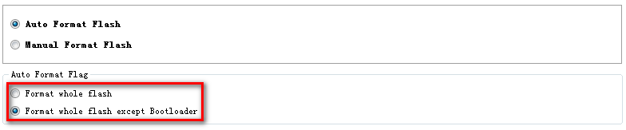
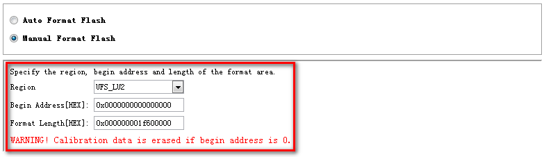

�� Format Options
Flash Tool provides Auto Format and Manual Format for users.
1. Auto Format
If ��Auto Format Flash�� is selected, the format range is according to the target NAND flash information reported by DA; No further information is required from user input.
�� Format whole flash
The flag will notify SP Flash Tool to format whole NAND flash.
�� Format whole flash except Bootloader
The flag will notify SP Flash Tool to format whole NAND flash except BootLoader (Pre-Loader & DSP_BL).

Note: The calibration data will be erased during ��Format whole flash�� operation.
2. Manual Format
By selecting ��Manual Format Nand Flash��, the flash is formatted according to the specified range.

Note: NVRAM calibration data may be erased during this format operation.
�� Format Step
1. Power off target
A handshake must be performed between Smart Phone Flash Tool and the target mobile phone, thus the target must initially be powered off, and connected to the PC via a download cable.
For USB download, please pull out both Cable and Battery.
2. Select DA
Please make sure the Download Agent has been assigned.
3. Select Scatter File
Please make sure correct scatter file has been assigned.
4. Configure Options
Open ��Option Dialog�� to select the expected options for download method, power supply and speed switch mode.
5. Start Format
Press ��Start�� button in format page to start downloading image.
6. Power on target
Power on the target and the format procedure will begin.
7. Stop Format
Note that to interrupt the format process at any time, press the STOP button or F10.
�� Format Process Show
Connection:

Format: